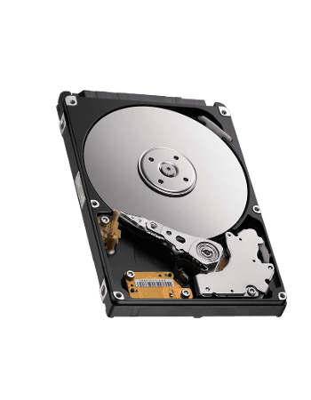
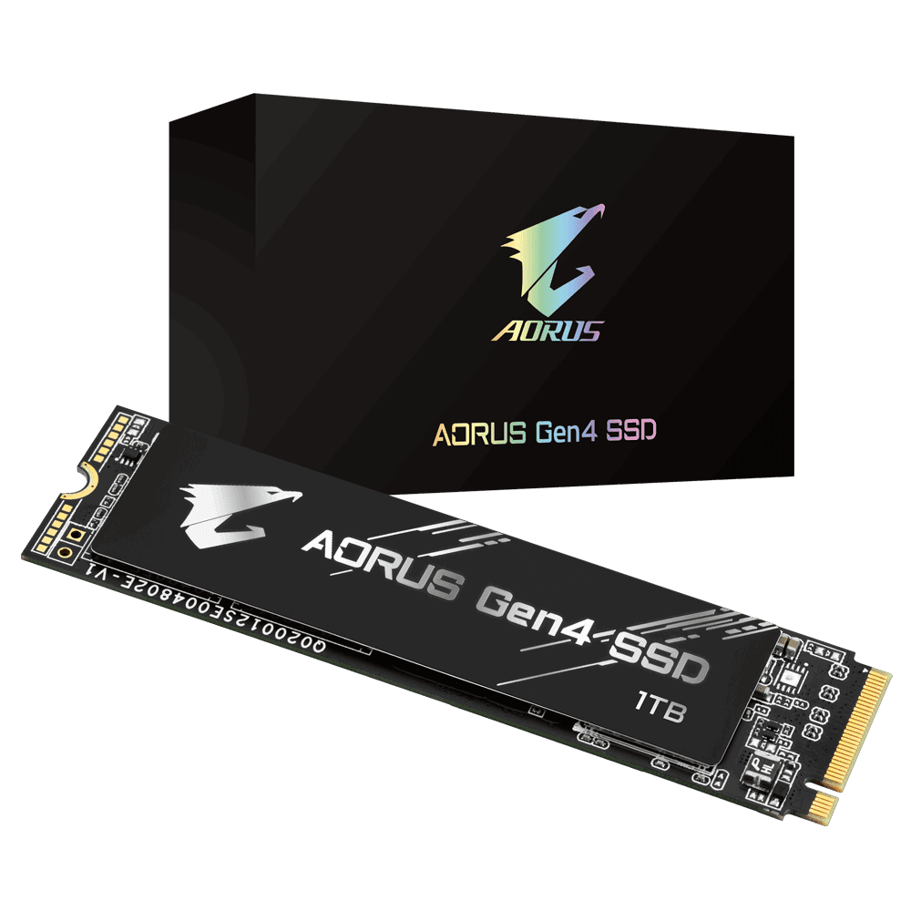

DISKO GOGORRA
Disko gogorra (ingelesez: hard disk, HD edo HDD akronimoekin laburtu ohi dena) ordenagailu baten informazio iraunkorra gordetzen duen gailua da. Disko gogorrek datu kopuru handiak gordetzeko gaitasuna izaten dute eta azkarrak dira datuak bilatu, ezabatu eta idazterakoan.
Orokorrean disko gogorrak, magnetiko digital grabazio sistema erabiltzen du.
Disko hauetan, karkasa barrenean, zentrokide plater pila bat aurkituko dugu. Plater hauek biraka hasten direnean, abiadura handia lortzen dute. Plater hauetan zehar inpultso magnetikoak irakurri edo idazteaz arduratzen diren buruak daude. Estandar ezberdinak daude ordenagailua disko gogorrarekin komunikatzeko garaian. Erabilienak Integrated Drive Electronics (IDE), SCSI, eta SATA dira, azken hau 2004ean estandarizatua.
Lantegitik ateratzen den bezala, disko gogorra ezin da sistema eragile batengatik erabilia izan. Lehenik maila baxuko formatu bat eta partizio bat edo gehiago definitu beharra daude eta gero gure sistemak uler dezakeen formatu bat eman behar zaio.
Solido egoerazkoak bezala deituriko mota desberdinetako diskoak ere existitzen dira informazioa biltegiratzeko erdieroalezko memoria erabiltzen dituztenak. Disko mota hauen erabilera konputagailu oso onentzat mugatzen zen orokorrean, bere prezio altuagatik, nahiz eta gaur egun merkatuan aurkitu daitezke kapazitate baxuko unitate ekonomikoagoak ordenagailu pertsonalen erabilerarako. Horrela, pista cachea solido egoerazko memoria bat da, memoria RAM mota, solido egoerazko gogor baten barruan.
EGITURA FISIKOA
Disko gogor baten barruan plater ugari daude (2 eta 4 artean), hauek disko kontzentrikoak dira eta denek batera egiten dute bira. Burua (irakurri eta idazteko gailua) denak batera, kanpora edo barrura mugitzen diren eta bertikalki lerrokatuta dauden beso multzo bat da. Plater hauen puntan irakurketa/idazketa buruak daude, buruaren mugimenduari esker diskoaren kanpoko eta barruko aldeak irakurri ditzakeenak.
Plater bakoitzak bi aurpegi ditu, eta beharrezkoa da irakurketa/idazketa buru bat aurpegi bakoitzarentzat (ez da buru bat plater bakoitzeko, buru bat aurpegi bakoitzeko baizik). Zilindro-Buru-Sektore eskema begiratzen bada, hasiera batean 4 beso ikusten dira, bat plater bakoitzarentzat. Errealitatean, beso bakoitza bikoitza da, eta 2 buru ditu: bat plateraren goiko aurpegia irakurtzeko eta bestea behekoa irakurtzeko. Orduan, 4 plater irakurtzeko 8 buru daude. Irakurketa/Idazketa buruek ez dute inoiz diskoa ukitzen, ordez oso gertu pasatzen dira (3 nanometro arte). Baten batek ukitzera iristen bada, diskoan eragozpenak sortuko lituzke, plateren abiadura handia dela eta (7.200 rpm, 120 km/h ertzean).
 